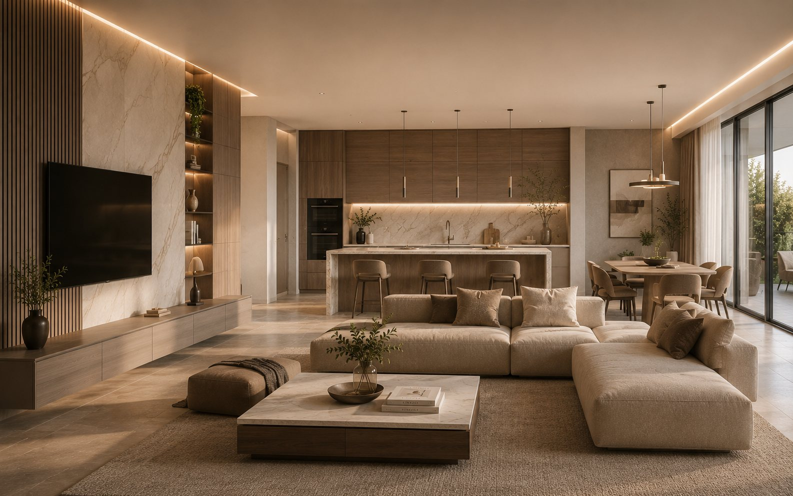
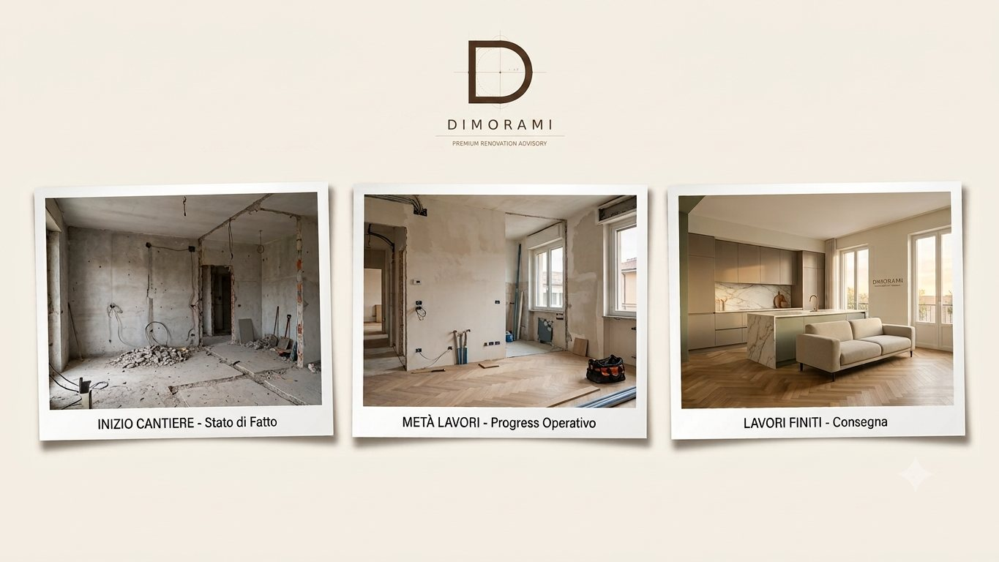

Caso studio · Appartamento Assente
Dimora Appartamento
Assente.
Cliente: Luca P. · Appartamento nei Castelli Romani · Proprietario residente all’estero — ristrutturazione gestita interamente per suo conto.
DIMORAMI · Premium Renovation Advisory
Sfoglia per scoprire come è andata →
01 · Il punto di partenza
Una casa da rifare,
un proprietario che non c’è.
Luca aveva ereditato un appartamento nei Castelli Romani ma vive fuori regione per lavoro. Voleva ristrutturarlo per metterlo a reddito, senza poter essere presente in cantiere né seguire imprese e fornitori di persona.
Da qui è partita la gestione remote-managed: sono io a esserci sul posto, al posto suo.
02 · Come gestisco a distanza
Lui decide,
io eseguo sul posto.
Il servizio ribalta la logica: il proprietario resta al centro delle decisioni, ma tutta l’operatività è delegata.
FronteChi lo gestisce
SopralluoghiIo, periodici, per conto del cliente
Fornitori e consegneIo, in loco, con verifica al ricevimento
Decisioni chiaveIl cliente, su proposte già istruite
AvanzamentoReport fotografico a ogni tappa
03 · Il progetto
La casa finita,
vista da lontano.
Render 3D di progetto

Render condiviso con il cliente a distanza: la base su cui approva scelte e varianti senza dover essere presente.
04 · I report fotografici
Il cantiere,
nelle sue mani ogni settimana.
Report fotografico di avanzamento

Report fotografico periodico: il cliente vede lo stato reale del cantiere senza doverci mettere piede.
05 · Decisioni pronte da approvare
Niente scelte
lasciate al caso.
Ogni decisione arriva al cliente già istruita: opzioni, costi e conseguenze. A lui resta l’ultima parola, non la ricerca.
✓Proposte con opzioni chiare e costo associato, pronte da approvare
✓Nessuna decisione presa a voce in cantiere senza il suo ok
✓Sopralluoghi e consegne verificati in loco per suo conto
✓Un aggiornamento sintetico e regolare, non cento messaggi sparsi
06 · I numeri del progetto
Cosa ha ricevuto,
senza esserci mai.
Da €5.500
Base Appartamento + €1.500 gestione remota
0
Viaggi necessari per il cliente
100%
Decisioni approvate a distanza
1
Riferimento unico sul posto
Deliverable: tutto Dimora Appartamento + sopralluoghi periodici per conto del cliente + report fotografici + gestione fornitori e consegne in loco.
07 · E adesso
Hai una casa da rifare
ma vivi altrove?
Se possiedi o acquisti un immobile a Roma Sud o nei Castelli Romani ma non puoi seguirlo, ci sono io al posto tuo — dal sopralluogo alla consegna.
Richiedi Dimora Appartamento Assente →